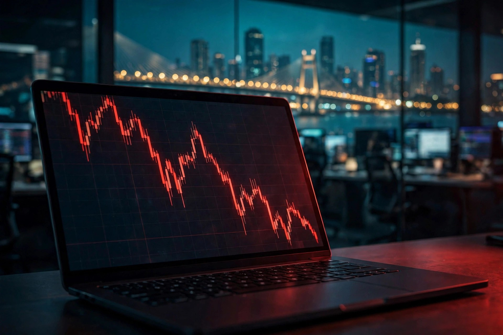

Blog · India focus
SEBI's 2026 F&O Verdict: 87.7% of Retail Traders Lost Money — What It Means for You

On August 20, 2026, India's market regulator published the kind of document most retail traders scroll past and almost nobody reads end to end. It is worth reading. SEBI's "Profitability of Individual Traders in the Equity Derivatives Segment (FY25–FY26)", built on client-level and transaction-level data covering roughly 90% of individual traders, puts a number on the hardest fact in Indian retail trading: 87.7% of individual F&O traders ended FY26 with a net loss.
This was not a survey or an estimate. It is the regulator's own data. And while the headline number has now made the rounds in every financial newspaper, the details inside the study — who loses, why they lose, and what exactly costs are doing to the few who don't — are what a serious trader should actually sit with.
The numbers that matter
The aggregate picture for FY26: individual traders lost a combined ₹91,685 crore, net of costs. That is down from roughly ₹1.12 lakh crore in FY25 — an 18% fall that looks like progress until you read the next line. The trader base shrank far faster than the losses did. Active individual traders fell from 98.1 lakh to 78.6 lakh, a drop of roughly a fifth, and new entrants fell by about 40%. Retail F&O exits surged 76% in the year.
In other words, the market did not get safer. The crowd got thinner. The average loss per trader actually edged up to around ₹1.17 lakh. SEBI's own summary line was blunt: "Despite lower aggregate losses, 87.7% of individual traders continued to incur losses during FY26."
87.7% lost money. Aggregate net losses: ₹91,685 crore. Options were behind roughly 92% of it.
The options-buyer problem
The study separates the traders by what they actually do, and the picture is stark. Nearly 97% of individual F&O traders predominantly follow option-buying strategies; only around 2% were classified as predominantly options sellers. "Options buyers continued to account for the overwhelming majority of traders and recorded substantially weaker outcomes than options sellers," SEBI said.
This is structural, not a coincidence of one bad year. An options buyer fights a battle with three fronts: the underlying has to move in their favour, it has to move fast enough to beat time decay (theta), and it has to move far enough to cover brokerage, exchange charges, STT, GST, stamp duty and SEBI fees. Buying an option is renting time at a price that only gets cheaper for you if the market hurries. It rarely hurries in your direction.
The numbers show it: 99.3% of individual traders traded options at least once in FY26, 93% traded only options, and options accounted for around 92% of aggregate individual losses. The retail F&O market is, for all practical purposes, an options-buying market — and the options-buying business has been a consistent loss machine.
The hidden tax: costs ate 4.4 lakh winners
Here is the study's most underappreciated finding. Before transaction costs, 82.1% of the 7.86 million individual traders — about 6.45 million — made losses in FY26. After costs, the net loss-makers rose to 87.7%, or about 6.89 million. The gap between those two numbers is roughly 4,40,000 traders who were profitable before costs and ended the year in net loss after paying them.
Costs are not a footnote in Indian derivatives trading; they are a strategy-killer. Individual traders bore total transaction costs of about ₹24,859 crore in FY26 — barely below the previous year even though premium turnover fell close to 5%. Because the cost base stayed flat while activity shrank, the average cost per trader rose 21.5%, from ₹26,027 to ₹31,628. Cumulative transaction costs over FY22–FY26 now sit at roughly ₹1 lakh crore — money paid to the ecosystem regardless of who won or lost.
The implication is uncomfortable: a meaningful number of retail traders are trading well enough to beat the market before costs and still losing money. If your edge is small, costs will eat it first. If you do not know your all-in cost per trade — brokerage, charges, taxes — you cannot know whether your strategy has an edge at all.
The crowd is walking away
SEBI's regulatory tightening over the past two years — larger contract sizes, fewer weekly expiries, higher margins — was designed to cool exactly this segment, and by the participation numbers it worked. New entrants fell ~40% in FY26, exits surged, and active traders fell to 78.6 lakh from 98.1 lakh.
That thinning of the crowd cuts two ways. On one hand, fewer under-capitalised first-timers getting burned is genuinely good. On the other, the fact that the loss rate stayed at 87.7% even as the weakest hands left suggests the problem is not just who trades, but how they trade. The survivor pool is more experienced and still loses at the same rate.
What serious traders take from this
The study is a mirror, not a warning label. Three lessons hold up for anyone still in the game.
First, know your real costs. 4.4 lakh traders were winners until the bill arrived. Calculate your all-in cost per round trip before you size a position — if the number surprises you, that is the point.
Second, respect what the 97% are doing. If nearly everyone in the room is buying options and nearly everyone loses, "buy options" is not a strategy, it is a lottery ticket with theta. Selling, spreading, hedging — the structures with a documented edge — are where the 2% live. They are harder to learn, which is exactly why they pay.
Third, get educated before you get exposed. Paper trading, risk guardrails, position-sizing discipline and mentorship are not garnish — they are the difference between paying tuition to the market and paying ₹1.17 lakh in losses. SEBI's data is the strongest advertisement for trading education India has ever produced.
That is also where events earn their keep. At Trading Expo India 2027, 23–24 April 2027, you can watch professional traders explain how they structure trades, compare brokers' real cost structures side by side at the exhibition, and sit through conference sessions on risk management that the SEBI study makes impossible to ignore. New to derivatives entirely? Start with our beginner's guide and the complete risk-management guide first. Book your pass.
Frequently asked questions
What percentage of F&O traders lose money in India?
SEBI's August 2026 study found that 87.7% of individual traders in the equity derivatives segment incurred net losses in FY26, after accounting for transaction costs. Before costs, the share of loss-makers was 82.1%.
How much did retail F&O traders lose in FY26?
Aggregate net losses of individual traders in FY26 stood at about ₹91,685 crore, down from roughly ₹1.12 lakh crore in FY25. The average loss per trader was approximately ₹1.17 lakh.
Why do most options buyers lose money?
SEBI's trading-behaviour study found nearly 97% of individual F&O traders predominantly follow option-buying strategies, which have a negative expected value over time due to time decay (theta) and transaction costs. Options accounted for around 92% of aggregate individual losses in FY26.
Meet the market in person.
Join 10,000+ visitors at Trading Expo India 2027, 23–24 April 2027. Early-bird passes from ₹249.